Discover the Soul of South Asia
Explore Pakistan
From the towering peaks of K2 to the ancient streets of Lahore, from the turquoise shores of Gwadar to the lush valleys of Swat — Pakistan is a land of breathtaking contrasts and timeless beauty.
Pakistan's Iconic Cities
Each city tells a unique story — from ancient empires to modern metropolises.
 Punjab
Punjab
Lahore
The Heart of Pakistan
The cultural heart of Pakistan, known for its rich history, Mughal architecture, food, and vibrant arts scene.
 Sindh
Sindh
Karachi
The City of Lights
Karachi is the largest city and financial hub of Pakistan, serving as the capital of Sindh province. Located along the Arabian Sea near the Indus River delta, it is the nation’s principal seaport and economic powerhouse, generating roughly a quarter of Pakistan’s GDP and handling most of its international trade
 Capital
Capital
Islamabad
The Green Capital
One of Asia's most beautifully planned and greenest cities. Known for the iconic Faisal Mosque, scenic Margalla Hills, and wide tree-lined roads. A modern, peaceful, and well-organized city.
 KPK
KPK
Peshawar
City of Flowers
One of Pakistan's oldest cities, serving as the gateway to the Khyber Pass. Rich in Afghan influences, ancient bazaars, and Mughal history. Famous landmarks include Qissa Khwani Bazaar and Bala Hisar Fort.
 Balochistan
Balochistan
Quetta
The Fruit Garden
Quetta is the capital and largest city of Balochistan, located in southwestern Pakistan near the Afghan border. Surrounded by mountains, it serves as a strategic, cultural, and commercial hub for trade between Pakistan, Afghanistan, and Iran. The city is noted for its multiethnic population and rugged, high-altitude climate.
 Punjab
Punjab
Multan
City of Saints
One of Pakistan's most ancient cities, famous for Sufi shrines, exquisite blue tile pottery, and the legendary Multani mango.
Must-Visit Tourist Places
Pakistan is home to some of the most spectacular landscapes on Earth.
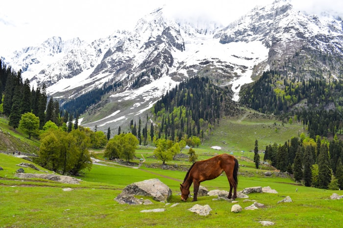
World's 2nd Highest PeakK2 — The Savage Mountain
Standing at 8,611 metres, the world’s second-highest peak, known for its extreme difficulty and breathtaking beauty in the Karakoram Range.
 Valley
Valley
Hunza Valley
Gilgit-Baltistan
A scenic valley famous for snow-capped mountains, blue rivers, and peaceful culture.
 Valley
Valley
Swat Valley
KPK
Called the “Switzerland of Pakistan,” known for lush green landscapes and rivers.
 Heritage
Heritage
Badshahi Mosque
Lahore
Built in 1673 by Mughal Emperor Aurangzeb, the Badshahi Mosque in Lahore is one of the largest and most magnificent mosques in the world. This stunning red sandstone masterpiece can accommodate 100,000 worshippers and stands as a timeless symbol of Mughal architectural brilliance and Islamic heritage in Pakistan.
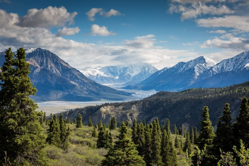
ValleyNeelum Valley
AJK
A crescent valley alongside the turquoise Neelum River, dense forests, cascading waterfalls, and charming mountain villages.
 UNESCO
UNESCO
Mohenjo-daro
Sindh
Mohenjo-daro is an ancient city of the Indus Valley Civilization located in Sindh, Pakistan. Built around 2500 BCE, it is known for its advanced city planning, drainage system, and structures like the Great Bath. It reflects a highly organized society with developed trade and craftsmanship. Today, it is a UNESCO World Heritage Site and an important symbol of early human civilization.
 Coastal
Coastal
Gwadar
Balochistan
Pristine Arabian Sea beaches, dramatic cliffs, and turquoise waters. Pakistan's rising deep-sea port and emerging coastal destination.
 Meadow
Meadow
Fairy Meadows
Gilgit-Baltistan
A lush plateau offering the world's most iconic view of Nanga Parbat — the 9th highest mountain. Named by German climbers for its magical beauty.
 UNESCO
UNESCO
Lahore Fort
Lahore
A UNESCO World Heritage site rebuilt by Emperor Akbar in the 16th century. The 20-hectare complex features remarkable Mughal palaces.
Pakistani Cuisine
Bold flavors, rich spices, and legendary hospitality — Pakistani food is an experience.

 🌶️🌶️🌶️ Spicy
🌶️🌶️🌶️ Spicy
Biryani
Karachi / Nationwide
Fragrant basmati rice layered with marinated meat, saffron, and caramelized onions. Karachi style is spicier; Lahori is richer.
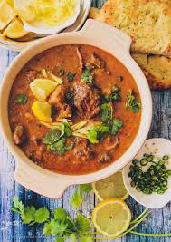
🌶️🌶️🌶️🌶️ Very SpicyNihari
Lahore / Delhi style
A slow-cooked beef stew simmered overnight with bone marrow and spices. Traditionally eaten for breakfast with naan.
 🌶️🌶️ Medium
🌶️🌶️ Medium
Chapli Kebab
Peshawar, KPK
Minced beef patties seasoned with coriander seeds, pomegranate, and green chillies. A Pashtun specialty impossible to resist.
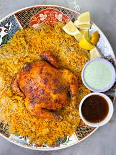
🌶️ MildSajji
Quetta, Balochistan
Whole lamb marinated in salt and spices, roasted on a skewer over open fire. Balochistan's iconic slow-cooked BBQ.
🌶️ Mild
Halwa Puri
Lahore, Punjab
The beloved Lahori breakfast — golden-fried puri with semolina halwa, chickpea curry, and pickle. A Sunday morning tradition.
 🌶️🌶️🌶️ Spicy
🌶️🌶️🌶️ Spicy
Mutton Karahi
Nationwide
Tender mutton cooked in a wok with tomatoes, ginger, green chillies, and fresh coriander. Pakistan's most ordered restaurant dish.
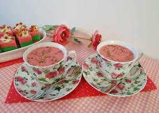
☕ BeverageKashmiri Chai
AJK / Nationwide
Strikingly pink salted tea brewed with green tea, milk, cardamom, and pistachios. Pakistan's most photogenic and comforting drink.
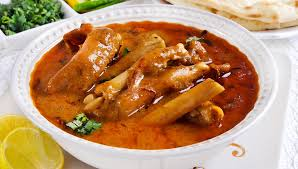
🌶️🌶️ MediumPaye
Punjab / KPK
Trotters slow-cooked overnight in a rich gelatinous broth with aromatic spices. A hearty winter breakfast that warms from inside.
Pakistan's Rich Culture
A civilization 5,000 years old — a mosaic of languages, music, crafts, and festivals.
Languages
Pakistan has 70+ languages. Urdu is national, English official. Punjabi, Sindhi, Pashto, and Balochi carry rich literary traditions.
- 🗣️ 70+ languages spoken
- 📜 Urdu — national language
- 📖 Rich poetic traditions

Music & Qawwali
From soulful Sufi Qawwali by Nusrat Fateh Ali Khan to modern Coke Studio global hits — Pakistan's music scene is legendary.
- 🎵 Qawwali — Sufi devotional music
- 🎸 Coke Studio — Global phenomenon
- 🥁 Classical Raga & Ghazal
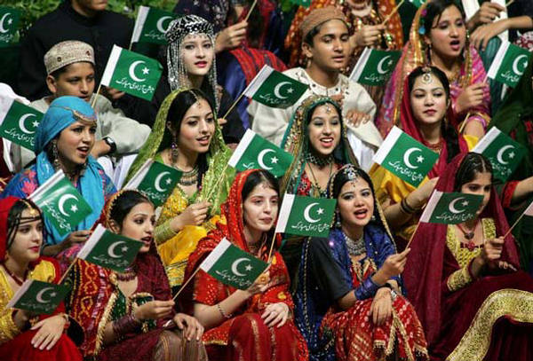
Festivals
From Basant kite festival in Lahore to the Shandur Polo Festival at 3,700m — Pakistan celebrates life with incredible color.
- 🪁 Basant — Kite Flying
- 🏇 Shandur Polo Festival
- 🌙 Eid ul-Fitr & Eid ul-Adha
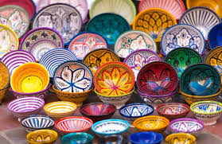
Arts & Crafts
Stunning truck art, Kashmiri shawls, hand-knotted rugs, Multani blue pottery, and Sindhi ajrak block prints define Pakistan's artistic soul.
- 🚛 Truck Art — Rolling galleries
- 🏺 Blue Pottery — Multan
- 🧣 Pashmina & Kashmiri Shawls
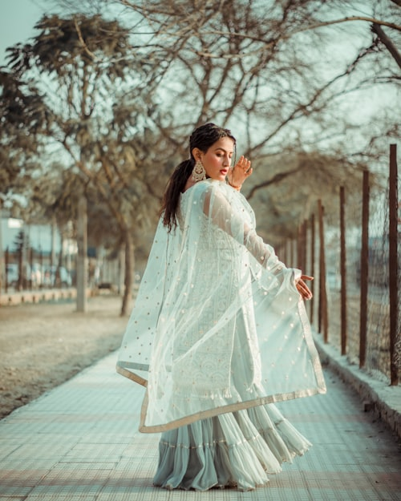
Traditional Clothing
The Shalwar Kameez is the national dress. Women's fashion ranges from embroidered bridal wear to colorful Sindhi mirror-work and Balochi embroidery.
- 👘 Shalwar Kameez — National dress
- 💎 Bridal embroidery art
- 🪞 Sindhi mirror-work

Sports
Cricket is a national religion — Pakistan produced legends like Imran Khan, Wasim Akram, and Babar Azam. Squash, hockey, and polo are also beloved.
- 🏏 Cricket — National passion
- 🏑 Field Hockey — Champions
- 🎾 Squash — Global champions
Pakistan Through the Lens
Every corner of Pakistan is a photograph waiting to be taken.
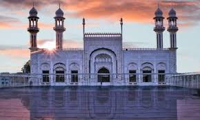

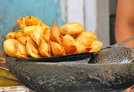

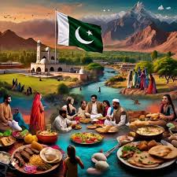
Tips for Visiting Pakistan
Best Time to Visit
March–May and September–November offer the most pleasant weather. Summer is ideal for northern treks.
Currency
Pakistani Rupee (PKR). Cash is widely used. ATMs available in major cities. Exchange USD/EUR at authorized changers.
Getting There
Major airports in Karachi, Lahore, Islamabad. PIA, Emirates, Turkish Airlines offer connections. E-visa for 50+ countries.
Hospitality
Pakistanis are famously warm. Being invited for tea by strangers is common. "Mehmaan Nawazi" (guest hospitality) is a national value.
Ready to Experience Pakistan?
Pakistan's tourism is rising and the world is discovering what locals have always known — this is one of the most beautiful countries on Earth.